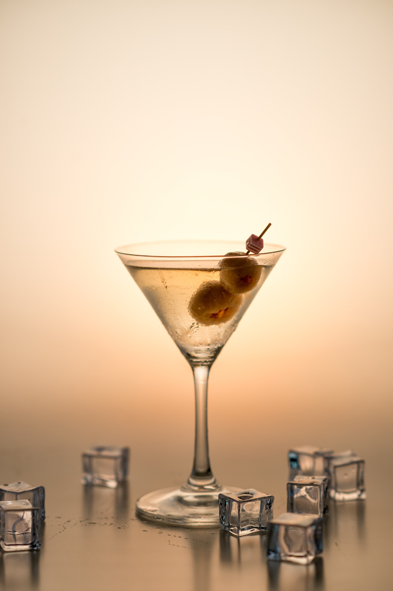

Recommended Drink: Vodka Martini

We recommend the King of Cocktails,
suitable for a rainy night.
Ingredients
- 2 ounces premium vodka
- 1/2 to 3/4 ounce dry vermouth
- Optional: 2 dashes bitters
- Garnish: lemon twist or 3 olives
Steps
- Gather the ingredients.
- Pour the ingredients into a cocktail shaker filled with ice.
- Shake well or stir for at least 30 seconds.
- Strain into a chilled glass.
- Garnish with a lemon twist or olives. Serve and enjoy!